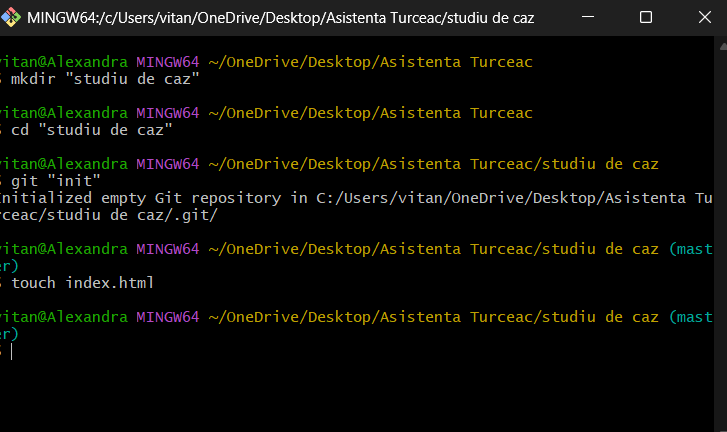

Git & GitHub
Cea mai puternică combinație pentru dezvoltare colaborativă modernă
De ce Git & GitHub?
Control de Versiune
Urmărește fiecare modificare, revino oricând, fără pierderi.
Colaborare Globală
Echipe din orice colț al lumii, sincronizate instant.
Securitate & Backup
Istoric criptat, recuperare instant, zero downtime.
Statistici 2025
Proiect realizat în cadrul modulului Asistență Managementul Proiectelor Software